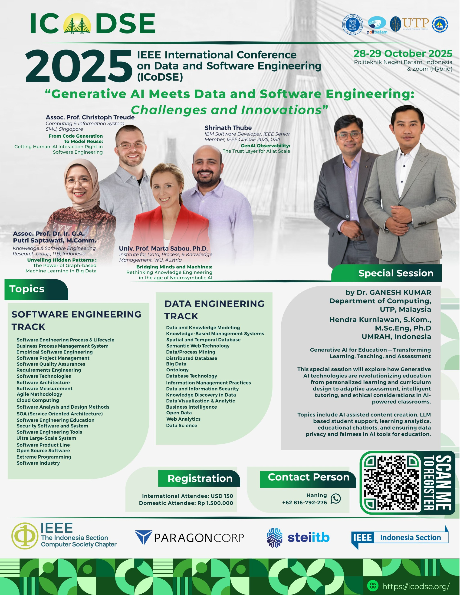

2025 IEEE International Conference on Data and Software Engineering (ICoDSE)
“Generative AI Meets Data and Software Engineering: Challenges and Innovations”
Date October 28-29, 2025
Venue Technopark Politeknik Negeri Batam (hybrid online + offline)

Program Schedule
Time in the program schedule is in Western Indonesia Time / Waktu Indonesia Barat (WIB; GMT+7). Please pay attention and adjust it to your local time. Current time in WIB can be found on time.is/Batam.
Day I – Tuesday, October 28, 2025
08.00–08.30
Registration Day 1
08.30–09.45
Opening Ceremony
09.45-10.00
Coffe Break
10.00–11.00
Keynote Speech 1: Assoc. Prof. Dr. Ir. G.A. Putri Saptawati (Knowledge and Software Engineering Research Group; Institut Teknologi Bandung (ITB); Indonesia)
11.00–12.00
Keynote Speech 2: Prof. Marta Sabou, Ph.D. (Institute of Data, Process, and Knowledge Management; Vienna University of Economics and Business (WU); Austria)
12.00–13.00
Lunch Break
13.00-15.00
Special Track: Generative AI for Education
Parallel Session I
15.00–16.00
Keynote Speech 3: AP. Cristoph Treude, Ph.D. (Computing and Information Systems; Singapore Management University (SMU); Singapore)
Hybrid Powered Library Chatbot: A LLM Solution for Book Recommendations and Service Assistance in Academic Libraries Rahmad Naibaho and Ryan Wijaya
Performance Analysis of CNN and SVM Approaches for Text-Based Emotion Classification Herimanto Pardede, Tegar Arifin Prasetyo, Ranty Deviana Siahaan, Putri Ruth Berliana Siahaan and Cheilint Claudina Siallagan
Creation of BAPOLAIC: An AI-Powered Chatbot for Document Recognition and Voice Assistance Rival Fahreji, Ryan Satria Wijaya, Anugerah Wibisana and Senanjung Prayoga
Cross-Lingual SynthDocs: A Large-Scale Synthetic Corpus for Any to Arabic OCR and Document Understanding Haneen Al-Homoud, Asma Ibrahim, Murtadha Al-Jubran, Fahad Al-Otaibi, Yazeed Al-Harbi, Daulet Toibazar, Kesen Wang and Pedro J. Moreno
Weak Labeling for Emotion Recognition: A CLIP Auto-Curation Approach Rina Yulius, Muchamad Fajri Amirul Nasrullah and Rajabul Haris
Machine Learning-Based Class Grouping for Differentiated Instruction under the Merdeka Curriculum Berta Erwin Slam, Nolan Efranda, Rifaldi Herikson and Rafi Dio
Session I-B
Room: Batam Center (2nd Floor), Hybrid - All Presenters Online
Spoken Language Recognition for Indonesian Local Languages Using Deep Learning Andree Panjaitan and Amalia Zahra
BISINDO Gloss to Indonesian Text Translation and Indonesian Text to BISINDO Gloss Translation Using Transfer Learning Arawinda Dinakaramani, Erdefi Rakun, Kurniawati Azizah and Evi Yulianti
An Automated System for Citation Intent Classification using SciBERT Jimly Firdaus and Fariska Zakhralativa Ruskanda
ASTE-RL: A Reinforcement Learning-Based Aspect Sentiment Triplet Extraction in Bahasa Indonesia Meganingrum Arista Jiwanggi and Iis Afriyanti
Sentiment Analysis on Indonesian Stock Market Texts: A Comparative Study of Support Vector Machine (SVM) and IndoBERT Reena Simanihuruk, Evi Yulianti, Kurniawati Azizah and Wisnu Jatmiko
Ensemble Learning for Stock Price Prediction using Financial Statements and News Sentiment Hobert Jonatan and Fariska Zakhralativa Ruskanda
Session I-C
Room: Muka Kuning (2nd Floor), Hybrid - All Presenters Online
Machine Learning Module in a Web Application Firewall for Multi-Label Web Attacks Detection Muhammad Bangkit Dwi Cahyono and Muhammad Zuhri Catur Candra
HyperQR: A Secure Multi-Frame QR Encoding Framework for Data Compression and Temporal Access Control Noortaz Ahmed, Maslinia Sujnus Shifa and Nishat Tasnim Niloy
Enhancing Phishing Detection with Machine Learning: A Study on the Effectiveness of Feature Selection Techniques Akbar Hamonangan, Dhanu Ahsan Fatih and Andi Sunyoto
Comparative Analysis of Static and Dynamic Evasion Techniques in Packers for Security Product Evaluation Muhammad Haidar Akita Tresnadi, Moch. Sofyan Firdaus, Frankie Huang and Robithoh Annur
Analysis of Antivirus Resilience and Efficiency Against Crypto Ransomware Attacks Frankie Huang, Muhammad Haidar Akita Tresnadi, Moch Sofyan Firdaus and Robithoh Annur
Iris Liveness Detection for Video Replay Attack using Quality Metrics and EfficientNetB7 Vaishali Kulloli and Maheshwari Biradar
Session I-D
Room: Batu Ampar (2nd Floor), Hybrid - All Presenters Online
The Effectiveness of Implementing Android’s TalkBack Screen Reader and Braille-Based Gestures on Android Application in Facilitating Visually Impaired Users in Music Learning Samantha Michelle and Sonya Manalu
A Reusable Library for Secure Attendance Systems: Fraud Mitigation Based on QR Code and Geolocation Akmal Oktavian, Wawan Gunawan and Mezan el-Khaeri Kesuma
Solvio: An Interactive and Gamified Platform for Teaching Computational Thinking Raditya Naufal Abiyu, Hosea Nathanael Abetnego, Razzan Daksana Yoni, Adi Mulyanto and Agung Dewandaru
Hein Method: Hybrid Content-Based Filtering for College Major Recommendation Farhan H Haq, Yuranan R Gartiwa and Shofiyati N Karimah
Affective Mood Tracking Task Reminders Powered by Machine Learning and Virtual Companion Aisyah Farhana Faizal, Suziah Sulaiman, Mahdiyeh Moosavi and Frederic Merienne
Machine Learning-Based CO₂ Emission Prediction and Industry Classification for Malaysia Khairunisah Mohd Hamdan and Ts. Nazleeni Samiha Haron
Session I-E
Full-Online
Decentralizaing the Tender Process Using Blockchain and Off-Chain Storage Ariel Jovananda and Muhammad Zuhri Catur Candra
A Hybrid Machine Learning Approach for Service Selection in Sidecar Service Mesh Rizky Abdillah Rasyid and Muhammad Zuhri Catur Candra
Generation and Visualization of BPMN from Legal Documents Willy Wilsen, Agung Dewandaru and Muhammad Zuhri Catur Candra
Neuro-Symbolic Compliance-as-Code: Toward Explainable, Adaptive, and Self-Evolving Governance Systems Sajal Nigam and Sagar Patel
Unit Test Case Generation from Source Code Based On Control Flow Graph Azmi Hasna Zahrani and Yani Widyani
Measurement of Modularity and Reusability Quality in Refactoring Object-Oriented Program Code Siti Rochimah, Bintang Nuralamsyah, Glenaya and Tiara Rahmania Hadiningrum
Session I-F: Special Session on Generative AI for Education
Room: TP 301 Tanjung Piayu (3rd Floor), Hybrid
Self‑Supervised Pretraining for High School Chemistry Problem Generation Using Conditional GANs. Invited Speaker: Hendra Kurniawan
Contextualized Hybrid Model for AI Ethics Governance in Malaysia’s TVET Sector Aminah Bibi Bawamohiddin and Noreen Izza Arshad
A Critical Review of Privacy, Bias, and Trust Challenges in Generative AI for Educational Contexts Raja Vavekanand and Ganesh Kumar
Automated Student Supervisor Allocation System Using Large Language Models and Linear Programming Sean Hou Yin Yee, Woan Ning Lim, Ganesh Kumar, and Muhammed Basheer Jasser
Generative AI for Software Project Management: Towards Adaptive, Personalized, and Project-Centered Learning Hasiah Mohamed, Norulhidayah Isa and Zawawi Ismail
Parallel Session II: Tue, Oct 28, 2025 16.00-18.00
Session II-A
Room: Sungai Harapan (2nd Floor), Full-Offline *)
Developing a FAIR-Compliant RDM Framework: Insights from TU Wien and ITB Wikan Danar Sunindyo, Hari Purnama, Saiful Akbar, Dicky Prima Satya, Martin Weise, Florina Piroi and Andreas Rauber
A Context-Sensitive Roadmap Framework for Digital Government Transformation in Resource-Constrained Regions: The Case of Mimika Regency, Indonesia Wikan Danar Sunindyo, Windy Gambetta and Neng Ayu Herawati
Index Selection in Database Based on Query Arrival Rate Prediction Ulung Adi Putra and Fazat Nur Azizah
Optimization of Circulation Route Connectivity Between Historic Buildings in the Penyengat Island Tourist Area Based on Graph Theory Sepli Yandri, Yessy Christanti Silaban, Bagas Giar Pratama, Emhade Arman Erhaqim and Rusydina Sabila Fauzi
Quality Evaluation of LLM-based Generated Test Case: A Literature Review Novi Setiani and Alifia
Session II-B
Room: Batam Center (2nd Floor), Full-Offline *)
Implementing End-to-End Encryption based on Messaging Layer Security in a Community-based Instant Messaging Application Salman Ma'Arif Achsien and Yudistira Asnar
Virtual Firewall Implementation with eBPF for Distributed Denial of Service Attacks in Cloud-Native Environments Irsyad Basuki and Yudistira Asnar
QoS Evaluation and Predictive Modeling of Ubidots and ThingSpeak for Smart Home Water Flow Data Asri Arganing Hasanah, Nurul Khairani, Heru Wijanarko and Muhammad Naufal Airlangga Diputra
Development of a Gamified Virtual Reality Application for Solar Activity Education Christian Albert Hasiholan, Addin Munawwar Yusuf, Agung Dewandaru and Erwin Rezasyah
An Empirical Study of Generative AI for CRUD Code: A PHP Case with Tutorial Based Novice Baselines Fortia Magfira, Feri Irawan and Basyaruddin Harahap
Session II-C
Room: Muka Kuning (2nd Floor), Hybrid - All Presenters Online
Buah Batu-Samsat Bandung Traffic Intersections Optimization with Multi-Agent Attention-Based Soft Actor-Critic (MASAC) using Real Data Ahmad Azhar Za and Anggera Bayuwindra
Community Detection in Dynamic Social Networks with Deep Learning Approaches Kevin John Wesley Hutabarat, Muhammad Zuhri Catur Candra and Maya Nabila
Causal Graph Extraction from Medical Literature using Large Language Models for Hetionet Mohammad Farhan Fahrezy, Agung Dewandaru, Gusti Ayu Putri Saptawati Soekidjo and Hendro Wicaksono
Information Retrieval System with Knowledge Graph–Based Retrieval-Augmented Generation Using Hetionet for the Medical Domain Mutawally Nawwar, Agung Dewandaru, Gusti Ayu Putri Saptawati Soekidjo and Hendro Wicaksono
Anomaly Detection in Multivariate Time Series Data with Multiple Seasonal Trends Ashton Williams and Soon Chung
LLMTestCraft: An Automated Framework for Unit Testing via Large Language Models Jamal Abdullahi Nuh, Tieng Wei Koh, Babangida Lawal, Adam Amril Jaharadak and Mohamed Abdullahi Ali
Session II-D
Room: Batu Ampar (2nd Floor), Hybrid - All Presenters Online
Human-in-the-Loop Artificial Intelligence for Asset Management: A Systematic Review of Applications, Methods, and Research Challenges Nurvita Arumsari, Moses Laksono Singgih and I Ketut Gunarta
Optimizing Differential Privacy for Effective Machine Learning-Based Financial Fraud Detection Kevin Fujianto, Fahimsyach Lokanta, Henry Lucky and Derwin Suhartono
Development of Association Rule Framework based on Particle Swarm Optimization on FP-Growth Weighted Fadly Muhammad and Gusti Ayu Putri Saptawati
Parallel Mining of Frequent Itemsets Based on AprioriHybrid with a Map-Based Trie Owen Kemp and Soon Chung
Stochastic Degree-Constrained Spanning Tree for Data-Driven Uncertain Network Optimization Anna Angela Sitinjak, Saib Suwilo, Mardiningsih Mardiningsih and Sutarman
Session II-E
Full-Online
Bitcoin’s Halving Cycle and Stock Market Correlation: A Machine Learning Approach Christopher Davin Sasrawan, Wilbert, Henry Lucky and Derwin Suhartono
Procedural Content Generation with Large Language Models for Three-Dimensional Environment Design Hidayatullah Wildan Ghaly Buchary, Agung Dewandaru and Teguh Budi Wicaksono
Nusava: Social Media Bot with Behavioral Model for Tourism Juan Christopher Santoso, Alexander Jason, Nathania Calista Djunaedi, Agung Dewandaru and Saiful Akbar
Intelligent Recommender System for IT Ticket Troubleshooting Using Semantic Embeddings and Collaborative Filtering Gerrald Nathaniel Syarif and Suharjito
Platform Ecosystem Resilience During Regulatory Disruption: A Causal Machine Learning Analysis of TikTok Shop’s Integration with Tokopedia in Indonesia’s Social Commerce Landscape Sabar Aritonang Rajaguguk
Session II-F
Full-Online
A Nomogram Visualization for Energy Management in Virtualized Environment for Product Configuration I Made Murwantara
User Behavior Analysis Base on Time Series Using Elasticsearch and Kibana Parinya Sornsamdaeng and Jongkol Janruang
Scalable Back-End for an AI-Based Diabetes Prediction Application Henry Anand Septian Radityo, Bernardus Willson, Raynard Tanadi, Saiful Akbar and Latifa Dwiyanti
Implementation of Web-Based Production Quality Control Monitoring System Using Scrum Method (Case Study: Automotive Component Company) Indra Akhmad Firdhaus, Anita Rachman, Nanda Amalia Irawan and Riyan Leandros
Integrating Public Health and Social Media Communications for COVID-19: A High-Quality Dataset with Validated Metrics **) Akhyar Ahmed, Aadil Rasheed, Esther-Maria Antao, Anatol-Fiete Naeher, Lothar H. Wieler and Irina-Catrinel Craciun
Parallel Session III: Wed, Oct 29, 2025 09.30-11.30
Session III-A
Room: Sungai Harapan (2nd Floor), Full-Offline *)
Cybersecurity Costs and Financial Performance: Do Firm Assets and Innovation Capabilities Make a Difference? Putri Fariska, Puspita Kencana Sari and Adhi Prasetio
A Hybrid Framework for Imputing Time Series Air Pollutant Data in Tropical Climates Area Hendra Kurniawan, Nerfita Nikentari, Doli Bonardo, Muhammad Amin, Nina Adriani, Marisha Pertiwi and Bavitra
Development of an Automated Visual Inspection System for PCB Defect Detection Using YOLOv11n and the SAHI Method Azhani Syahputra, Ryan Satria Wijaya, Rifqi Amalya Fatekha and Senanjung Prayoga
Satellite Image Analysis for Oil Spill Detection and Classification Using Machine Learning Azlina Kamaruddin, Norma Alias and Yahya Nur Ifriza
Comparative Analysis of RBF Neural Networks and CNN for Mangrove Identification Using Field Images Nola Ritha, Nurul Hayaty, Dony Apdillah, Martaleli Bettiza, Alramadan Oloansyah Dasopang and Tri Nanda
Ball Distance Estimation Using Machine Learning on an Omnidirectional Camera for a Middle Size Soccer Robot Danni Syahputra, Anugerah Wibisana, Masdika Aliman and Ichsan Fajar Yudika
Session III-B
Room: Batam Center (2nd Floor), Hybrid - All Presenters Online
MediVision: An Explainable and Robust Deep Learning Framework for Knee Osteoarthritis Grading Golam Kibria, Shayan Abrar, B. M. Shahria Alam, Asaduzzaman Rayhan, Mohammad Tahmid Noor, Rafiul Awal and Shamim Ripon
Hyperparameter Optimization Strategies for Enhancing Modified YOLO11 in Fire Detection Satriadi Putra Santika, Arya Krisna Putra, Abba Suganda Girsang and Ezra Peranginangin
Enhancing Rice Grain Classification Performance Using EfficientNet-CBAM Model M. Faris Al Hakim, Fariska Ratna Fauziah and Budi Prasetiyo
YOLOv8 Implementation on ESP32-CAM for IoT-Based Human and Vehicle Detection Asep Trisna Setiawan, Ary Setijadi Prihatmanto, Muhammad Fahmi Nurfadilah, M. Aji Perdana, Mohammad Riza Nurtam, Faiza Kailani Kuswanto, Dika Hastanto, Nina Lestari and Dewi Tresnawati
Cross-Domain Fine-Tuning of YOLOv8 for Vehicle Detection in Daytime and Nighttime Traffic Surveillance I Nyoman Eddy Indrayana, Made Sudarma, I Ketut Gede Darma Putra and Anak Agung Kompiang Oka Sudana
Identification of Stroke Level Based on EEG Waves Using Wavelet and Slim UNETR Lucky Bahtiar and Esmeralda Djamal
Session III-C
Room: Muka Kuning (2nd Floor), Hybrid - All Presenters Online
Towards a Versatile Hierarchical Data Management System for Numerical Data in Distributed Environments Drestanto Muhammad Dyasputro
Designing Resilient Cloud Based ETL Systems for Scalable Business Intelligence Sruthi Erra Hareram
Implementation and Evaluation of Query Performance Prediction Network on The Sakila Schema Matthew Mahendra and Tricya Esterina Widagdo
Performance benchmark of Embedded Model using MongoDB Marcos Roberto G. Bahiense Junior, Lanier M. Santos, Raimundo N. V. Diniz Junior and Erick C. Bezerra
Epigenomic Data Storage System to Support Training of Cis-Regulatory Region Activity Prediction Using Feed Forward Neural Network Marco William Langi and Fazat Nur Azizah
Distributed Micro-Clustering of Streaming Text Data Using MPI on HPC Systems Nathaniel Crossman and Soon Chung
Session III-D
Room: Batu Ampar (2nd Floor), Hybrid - All Presenters Online
Rentify: Leveraging Access-Based Consumption to Minimize Waste and Optimize Product Utilization William, Abraham Kefas Wilham, Sonya Rapinta Manalu and Muhammad Keenan Ario
AuTour: A Mobile App for Disaster-Resilient Tourism Using Feature-Driven Architecture Sherwin Glorioso and Thelma Palaoag
A Mobile Application Front-End for Presenting Explainable AI Results in Diabetes Risk Estimation Bernardus Willson, Henry Anand Septian Radityo, Raynard Tanadi, Saiful Akbar and Latifa Dwiyanti
Street View Imagery with Swipe and Push Features for the Interaction Design of Physical Book Search Navigation in the iPusnas Mobile Application Vania Salsabila and Adi Mulyanto
Improving The Level of Design Through Activity-Centered Design Approach (Case Study: Itinerary Making) Karina Rahadiani and Adi Mulyanto
Session III-E
Full-Online
Reverse-Engineering and Automating BDD for Modern Software Development with LLMs Sagar Patel, Sajal Nigam and Shrikanth Mahale
Enhancing Automated User Story Quality Assessment with Large Language Models Guntur Budi Herwanto, Wicaksono Leksono Muhamad and Waffiq Maaroja
Software Defect Prediction using Adaptive Differential Evolution-based Quantum Variational Autoencoder-Transformer (ADE-QVAET) Model Mohanakrishnan Hariharan, Seshu Babu Barma and Satish Arvapalli
Agentic RAG for Software Testing with Hybrid Vector- Graph and Multi-Agent Orchestration Mohanakrishnan Hariharan, Seshu Babu Barma, Satish Arvapalli and Evangeline Sheela
Development of a Large Language Model-Based Unit Test Case Generator Reza P. Ubaidillah and Yani Widyani
HiCoS: Hierarchical Commit Summarizer and LLM Benchmarking Thiago Falcão, Jordan Queiroz and Erick Bezerra
*) The session can still be attended online via Zoom **) In confirmation